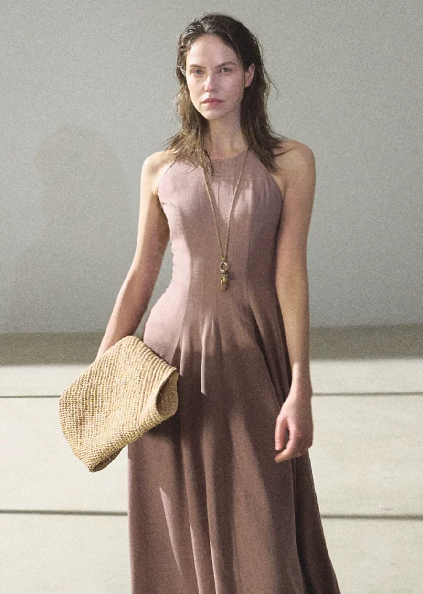

n at u r a l
Comfy style is all about feeling relaxed, cozy, and confident.
It combines soft fabrics, loose-fitting clothes, and simple designs.
Linan is a fashion style that combines comfort, simplicity, and elegance.
It focuses on soft fabrics, relaxed outfits, and timeless designs.
Neutral colours and minimal accessories make the style look clean and classy.
Linan style is perfect for those who love a natural, comfortable, and fashionable look.

Nimma dinanitya baalakege tumba aramadayaka mattu trendy ada dress galu indu labhya. Ultra-soft fabric mathe premium design.
Shop Collection Now